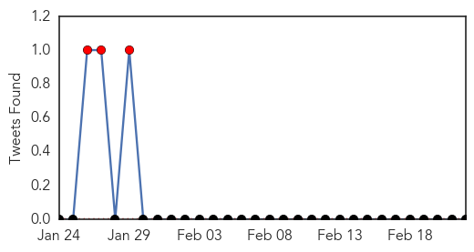

30 Day Trends
Web: 11 alerts, 7 warnings
Twitter: 3 alerts, 0 warnings
Top Articles:
- 0.989
- Monday Medical: measles is very contagious and preventable
- 0.981
- 10th measles case confirmed in Toronto
- 0.976
- Snohomish County has close call with measles-infected visitor
- 0.974
- 19th case of measles
- 0.964
- No measles cases in area
- 0.957
- Local providers urge measles shots - Steubenville, Wintersville, Toronto, Mingo, Weirton, Jefferson County
- 0.951
- States Improve Response to Measles Outbreaks
- 0.949
- Vaccinations are safe and effective
- 0.934
- More measles cases tied to Disneyland, Illinois day care Republican American
- 0.923
- 10th confirmed case of measles in Toronto an adult female
- 0.916
- Toronto health officials report 10th case of measles
- 0.875
- In defence of vaccination
- 0.863
- Amid debate, doctors say it's clear: Immunizations work
- 0.862
- End the religious and philosophical exemptions for vaccines;
- 0.857
- Falling immunisation rates linked to spread of measles
- 0.843
- What to know about measles and vaccinations
- 0.841
- Dana Hills High School
- 0.799
- Adults Not Off the Hook on Measles Outbreak
- 0.780
- Doctors focus on 'vaccine-hesitant,' not 'anti-vaxxers,' to fight outbreaks
- 0.777
- Protect our children and community
- 0.765
- Vaccination reduces chance of virus outbreak
- 0.764
- Health unit can send unvaccinated children home during outbreaks
- 0.742
- Could Milwaukee Have a Measles Outbreak? Urban Milwaukee
- 0.733
- Vaccines are unavoidably political
- 0.703
- UB Reporter: Need to know news and views for UB faculty and staff
- 0.698
- Vaccine opposition ebbs and flows
- 0.692
- Vaccinations are parents' responsibility
- 0.675
- Where does New Hampshire stand on childhood vaccine exemptions?
- 0.632
- Teacher vaccinations latest issue in war on illness in the classroom
- 0.567
- Paul Offit’s Measles Crusade
Top Tweets:
-
No tweets found for Feb 22, 2015
Web/News Articles

Tweets
Article Locations

Article Confidences